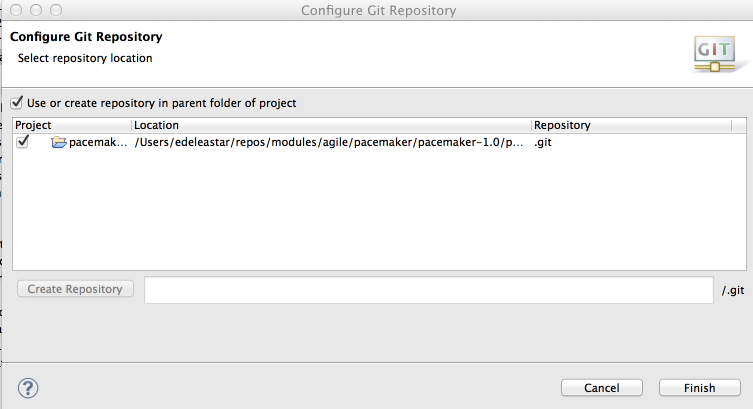

Objectives
Explore Database evolutions in Play. Build a test project, that communicates with the play service over http. Write some initial tests to verify the User class features
Evolution - Local
From last weeks lab you should have a version of pacemakerplay running locally on your localhost. This is the project here:
You may also have this running on heroku if you completed the relevant steps from last week. If you did, then you may also have a version of the app that can run locally, but be connected to the remove database (step 09 from the last lab).
We have set evolutions to true in our application.conf:
applyEvolutions.default=trueThis means that, if we change the our Model, the play framework will realise this as the application starts up, and will do two things:
- Generate am SQL script that will 'evolve' the database to accommodate the changed model
- Execute this script as the app is launching.
Here is our current script - in cont/evolutions/default/1.sql
# --- Created by Ebean DDL
# To stop Ebean DDL generation, remove this comment and start using Evolutions
# --- !Ups
create table my_user (
id bigint not null,
firstname varchar(255),
lastname varchar(255),
email varchar(255),
password varchar(255),
constraint pk_my_user primary key (id))
;
create sequence my_user_seq;
# --- !Downs
SET REFERENTIAL_INTEGRITY FALSE;
drop table if exists my_user;
SET REFERENTIAL_INTEGRITY TRUE;
drop sequence if exists my_user_seq;We will make a small change in User to see this process in action. Edit 'User' class to have a new field:
public String nationality;To run the app locally, you need to comment in the local database connection, and comment out the heroky settings:
#db.default.driver=org.postgresql.Driver
#db.default.url=${DATABASE_URL}
db.default.driver=org.h2.Driver
db.default.url="jdbc:h2:mem:play"
db.default.user=sa
db.default.password=""Run the app locally - just using the run command - and browse to the app. Using postman, create a new user and verify that the new field is present.
Now open 1.sql - and it should have an extra entry in the script:
nationality varchar(255),(You may refresh eclipse before opening)
Recap what we have just done:
- Revised the model
- Generated an evolution script
- Apply this to the database
All of this have been triggered just be running the app locally.
Evolution - Remote
In order to deploy our revised application to heroku, we will need to make sure that the generated script is compatible with Postgress, as opposed toe the local internal database we are using locally. In addition, we would need to:
- Generate compatible Evolution script compatible with Heroku
- Commit all changes to Git
- Push app to Heroku
Generate Compatible Evolution script compatible with Heroku.
Using step 09 of last week lab as a guide, run a version of your app locally that is using the heroku database. This will just adjusting your application.conf to look something like this:
db.default.driver=org.postgresql.Driver
db.default.url="jdbc:postgresql://ec2-54-227-242-149.compute-1.amazonaws.com:5432/d36j7gchn8nuh6?user=cywohlrwnycunw&password=X2-VqariG0cbludR74bVWqRzQK&ssl=true&sslfactory=org.postgresql.ssl.NonValidatingFactory"
#db.default.url=${DATABASE_URL}
#db.default.driver=org.h2.Driver
#db.default.url="jdbc:h2:mem:play"
#db.default.user=sa
#db.default.password=""NB: Do not use the connection url above, as this is specific to one database on my account.
Run the app - and it should start up successfully - and generate the correct evolution script. Examine this script to see if it makes sense.
Commit all changes to Git
To get the app ready for deployment, change the database settings back to this:
db.default.driver=org.postgresql.Driver
db.default.url=${DATABASE_URL}
#db.default.driver=org.h2.Driver
#db.default.url="jdbc:h2:mem:play"
#db.default.user=sa
#db.default.password=""We also have live changes to User.java and the sql script.
Git should be built in to your version of eclipse - so we should be able to do what we want from within eclipse.
First, select your project and select 'Team->Share' form the context menu

The project is already configured and committed to git (we did this in last weeks lab). By pressing 'finish' we are just picking up the git configuration already established.
Our workspace will change to look like this:

There are symbols in front of each icon indicating the status of the file - whether it is committed, changed, deleted etc in git. However, note that the User.java aapplication.comf and 1.sql files have a '>'. This indicates that they has been changed, but not committed. Select your project again and select 'Team->Commit' - you should see this dialog:
Enter a suitable message - and commit the changes. (If you see other files in here - particularly ones beginning in '.target', do not select them for committal).
Push app to Heroku
Now, back on the console, push the new version to heroku:
git push heroku masterTest the newly deployed app - verify that there is a new field called nationality in the user object.
Testing
Create a new Java Project in eclipse called pacemakerplaytest.
In this project, create an ordinary (not source) folder called lib. Download this archive here:
Uzip its contents into the lib folder - and add all the jar files to the build path of the project (select them all, right-click and select 'add to build path).
In the project source folder, create 4 packages called:
- app.api
- app.models
- app.test
Your project will look something like this:
app.models
Bring this version of the User class from pacemakerplay into the models package:
User
package app.models;
import com.google.common.base.Objects;
public class User
{
public Long id;
public String firstname;
public String lastname;
public String email;
public String password;
public User()
{
}
public User(String firstname, String lastname, String email, String password)
{
this.firstname = firstname;
this.lastname = lastname;
this.email = email;
this.password = password;
}
public boolean checkPassword(String password)
{
return this.password.equals(password);
}
public void update (User user)
{
this.firstname = user.firstname;
this.lastname = user.lastname;
this.email = user.email;
this.password = user.password;
}
public String toString()
{
return Objects.toStringHelper(this)
.add("Id", id)
.add("Firstname", firstname)
.add("Lastname", lastname)
.add("Email", email)
.add("Passwrod", password).toString();
}
@Override
public boolean equals(final Object obj)
{
if (obj instanceof User)
{
final User other = (User) obj;
return Objects.equal(firstname, other.firstname)
&& Objects.equal(lastname, other.lastname)
&& Objects.equal(email, other.email);
}
else
{
return false;
}
}
}It is a little simpler than the Play version - we have removed all JPA references, and also the reference to the Model class. Otherwise it is the same.
app.api
JsonParsers
package app.api;
import java.util.ArrayList;
import java.util.List;
import app.models.User;
import flexjson.JSONDeserializer;
import flexjson.JSONSerializer;
public class JsonParser
{
private static JSONSerializer userSerializer = new JSONSerializer().exclude("class");
public static User renderUser(String json)
{
return new JSONDeserializer<User>().deserialize(json, User.class);
}
public static String renderUser(Object obj)
{
return userSerializer.serialize(obj);
}
public static List<User> renderUsers(String json)
{
return new JSONDeserializer<ArrayList<User>>().use("values", User.class).deserialize(json);
}
}This class is similar (but not identical to) the JsonParser in the pacemakerplay project. It is very important that both projects (this one and the play one), contain the same version of this class. Copy this one into the pacemakerplay, overwriting the one there, now. (the only difference will be the import statement for User).
Rest
Now bring this into the same package:
package app.api;
import org.apache.http.HttpResponse;
import org.apache.http.client.methods.HttpDelete;
import org.apache.http.client.methods.HttpGet;
import org.apache.http.client.methods.HttpPost;
import org.apache.http.client.methods.HttpPut;
import org.apache.http.entity.StringEntity;
import org.apache.http.impl.client.BasicResponseHandler;
import org.apache.http.impl.client.DefaultHttpClient;
import org.apache.http.params.BasicHttpParams;
import org.apache.http.params.HttpConnectionParams;
import org.apache.http.params.HttpParams;
public class Rest
{
private static DefaultHttpClient httpClient = null;
private static final String URL = "http://localhost:9000";
private static DefaultHttpClient httpClient()
{
if (httpClient == null)
{
HttpParams httpParameters = new BasicHttpParams();
HttpConnectionParams.setConnectionTimeout(httpParameters, 10000);
HttpConnectionParams.setSoTimeout(httpParameters, 10000);
httpClient = new DefaultHttpClient(httpParameters);
}
return httpClient;
}
public static String get(String path) throws Exception
{
HttpGet getRequest = new HttpGet(URL + path);
getRequest.setHeader("accept", "application/json");
HttpResponse response = httpClient().execute(getRequest);
return new BasicResponseHandler().handleResponse(response);
}
public static String delete(String path) throws Exception
{
HttpDelete deleteRequest = new HttpDelete(URL + path);
HttpResponse response = httpClient().execute(deleteRequest);
return new BasicResponseHandler().handleResponse(response);
}
public static String put(String path, String json) throws Exception
{
HttpPut putRequest = new HttpPut(URL + path);
putRequest.setHeader("Content-type", "application/json");
putRequest.setHeader("accept", "application/json");
StringEntity s = new StringEntity(json);
s.setContentEncoding("UTF-8");
s.setContentType("application/json");
putRequest.setEntity(s);
HttpResponse response = httpClient().execute(putRequest);
return new BasicResponseHandler().handleResponse(response);
}
public static String post(String path, String json) throws Exception
{
HttpPost putRequest = new HttpPost(URL + path);
putRequest.setHeader("Content-type", "application/json");
putRequest.setHeader("accept", "application/json");
StringEntity s = new StringEntity(json);
s.setContentEncoding("UTF-8");
s.setContentType("application/json");
putRequest.setEntity(s);
HttpResponse response = httpClient().execute(putRequest);
return new BasicResponseHandler().handleResponse(response);
}
}.. and finally this:
PacemakerAPI
package app.api;
import java.util.List;
import app.models.User;
import static app.api.JsonParser.*;
public class PacemakerAPI
{
public static List<User> getUsers () throws Exception
{
String response = Rest.get("/api/users");
List<User> userList = renderUsers(response);
return userList;
}
public static User createUser(String userJson) throws Exception
{
String response = Rest.post ("/api/users", userJson);
return renderUser(response);
}
public static User createUser(User user) throws Exception
{
return createUser(renderUser(user));
}
public static User getUser(Long id) throws Exception
{
String response = Rest.get ("/api/users/" + id);;
User user = renderUser(response);
return user;
}
public static void deleteUsers() throws Exception
{
Rest.delete("/api/users");
}
public static void deleteUser(Long userId) throws Exception
{
Rest.delete("/api/users/" + userId );
}
public static void updateUser(Long userId, String userJson) throws Exception
{
Rest.put("/api/users/" + userId, userJson);
}
public static void updateUser(Long userId, User user) throws Exception
{
Rest.put("/api/users/" + userId, renderUser(user));
}
}All classes in this package should compile.
app.test
The test fixture is a class centralizing some test data:
Fixtures
package app.test;
import app.models.User;
public class Fixtures
{
static String userJson = "{\n"
+ "\"email\" : \"jim@simpson.com\" ,\n"
+ "\"firstName\": \"Jim\" ,\n"
+ "\"lastName\" : \"Simpson\" ,\n"
+ "\"password\" : \"secret\" \n"
+ "}";
static User users[] = {
new User ("homer", "simpson", "homer@simpson.com", "secret"),
new User ("lisa", "simpson", "lisa@simpson.com", "secret"),
new User ("maggie", "simpson", "maggie@simpson.com", "secret"),
new User ("bart", "simpson", "bart@simpson.com", "secret"),
new User ("marge", "simpson", "marge@simpson.com", "secret"),
};
}And this is the first actual test:
UserTest
package app.test;
import static org.junit.Assert.*;
import java.util.List;
import org.apache.http.client.HttpResponseException;
import org.junit.After;
import org.junit.Before;
import org.junit.Test;
import app.api.PacemakerAPI;
import app.api.Rest;
import app.models.User;
public class UserTest
{
static User users[] =
{
new User ("homer", "simpson", "homer@simpson.com", "secret"),
new User ("lisa", "simpson", "lisa@simpson.com", "secret"),
new User ("maggie", "simpson", "maggie@simpson.com", "secret"),
new User ("bart", "simpson", "bart@simpson.com", "secret"),
new User ("marge", "simpson", "marge@simpson.com", "secret"),
};
User user;
@Before
public void setUp() throws Exception
{
user = new User ("mark", "simpson", "mark@simpson.com", "secret");
PacemakerAPI.deleteUsers();
}
@After
public void tearDown() throws Exception
{
PacemakerAPI.deleteUsers();
}
@Test
public void createUserJson() throws Exception
{
User user1 = PacemakerAPI.createUser(Fixtures.userJson);
User user2 = PacemakerAPI.getUser(user1.id);
assertEquals(user1, user2);
PacemakerAPI.deleteUser(user1.id);
}
@Test
public void createUserObj() throws Exception
{
User user2 = PacemakerAPI.createUser(user);
assertTrue(user.equals(user2));
PacemakerAPI.deleteUser(user2.id);
}
@Test
public void createUserObjs() throws Exception
{
for (User user : Fixtures.users)
{
User user2 = PacemakerAPI.createUser(user);
user.id = user2.id;
}
List <User> users = PacemakerAPI.getUsers();
assertEquals(users.size(), Fixtures.users.length);
for (User user : Fixtures.users)
{
PacemakerAPI.deleteUser(user.id);
}
List <User> users2 = PacemakerAPI.getUsers();
assertEquals(0, users2.size());
}
@Test
public void updateUser() throws Exception
{
User user2 = PacemakerAPI.createUser(user);
user2.email = "NEWNAME@simpson.com";
PacemakerAPI.updateUser(user2.id, user2);
User user3 = PacemakerAPI.getUser(user2.id);
assertEquals (user3.email, "NEWNAME@simpson.com");
assertEquals (user3.id, user2.id);
PacemakerAPI.deleteUser(user2.id);
}
@Test
public void updateNonExistantUser() throws Exception
{
try
{
Rest.put("/api/users/4000", Fixtures.userJson);
fail ("put error");
}
catch(HttpResponseException e)
{
assertTrue (404 == e.getStatusCode());
}
}
@Test
public void deleteeNonExistantUser() throws Exception
{
try
{
Rest.delete("/api/users/4000");
fail ("delete error");
}
catch(HttpResponseException e)
{
assertTrue (404 == e.getStatusCode());
}
}
}Test
The project should be structure something like this now:
Make sure that pacemakerplay is running, and now attempt to run all of the tests in UserTest

They should all pass. The first test may fail if the app has only just been launched. However, it should run on subsequent attempts as the database will have been primed.
These are the two project archives here in case something is not working as expected:
Exercises
Exercise 1:
If you have deployed to Heroku - then change the url in the Rest class to your heroku app:
private static final String URL = "http://localhost:9000";Now try running the tests. You man need to bring the server up by navigation to the default url on a browser first.
Exercise 2:
Consider Activities - and how our service might support them. See if you can figure out a way of incorporating activities into the model on the server + supporting routes.
Perhaps for your first attempt, the Activities could be very simple (remove date/times), and not related to Users in any way. This might enable to to build some simple test cases.
Next weeks lab will explore how we can establish that relationship.